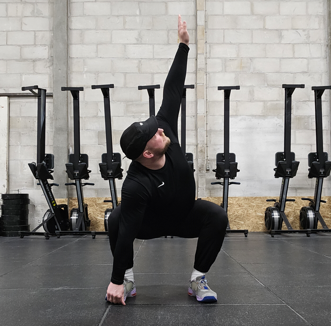
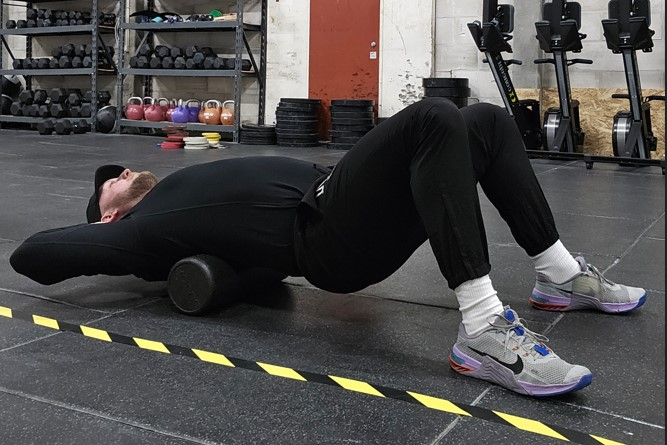

Mobilitetsguide
Da mobilitet er en essentiel ting i crossfit, og det kommer bag på mange nybegyndere hvor god eller dårlig deres mobilitet egentlig er, har vi i Evolve Training lavet en mobilitets guide til ny begyndere.I finder specifikke forklaringer og mobilitets øvelser i dropsdown menuen under mobilitet guide. Til at starte med vil vi lige forklare hurtigt hvad det er, hvor og hvornår det anvendes.
Crossfit, med sin fokus på højintensiv træning og alsidige bevægelser, kræver ikke kun styrke og udholdenhed, men også god mobilitet. Mobilitet refererer til kroppens evne til at bevæge sig frit og smidigt gennem et fuldt bevægelsesområde. En god mobilitet er ikke kun afgørende for at udføre øvelser korrekt, men det kan også bidrage til at forebygge skader og forbedre din samlede ydeevne.
Opvarmning
En effektiv opvarmning er afgørende for at forberede din krop til træning og forbedre din mobilitet. Inkluder dynamiske strækøvelser, der retter sig mod de muskelgrupper, du vil arbejde med under din træning. Dette kan omfatte arm- og skuldercirkler, hofteåbnere og dynamiske strækøvelser for benene.
Efter din træning
Inkluder strækøvelser i din daglige rutine for at forbedre din mobilitet. Fokuser på at strække de primære muskelgrupper, der er involveret i dine CrossFit-øvelser, såsom hofter, lår, skuldre og ryg. Hold strækkene i 20-30 sekunder og gentag dem flere gange.
Der er oftest mobilitet med på de forskellige hold i din boks, ellers gå til dine trænere de har med sikkerhed råd til at holde dig mobil og skadefri.
